9. Storage pools¶
The Knuth’s description of linked allocation begins at page 254 of [Knu97].
Note
“But even more importantly, there is often an implicit gain in storage by the linked memory approach, since tables can overlap, sharing common parts; […] The usefulness of linked memory is predicated on the fact that in the large majority of applications we want to walk through lists sequentially, not randomly. […] The linked scheme lends itself immediately to more intricate structures that simple linear lists. We can have a variable number of variable-size lists; any node of the list may be a starting point for another list; the nodes may simultaneously be linked together in several orders corresponding to different lists; and so on.”
—Donald E. Knuth
We start with the mechanism that supplies space for a new node, by the class
Object subclass: #CTLinkedStoragePool
instanceVariableNames: 'avail'
classVariableNames: ''
package: 'Containers-LinkedStoragePool'
which implements both operation (4),
"CTLinkedStoragePool, protocol initialization"
allocateOrReuseLink
^ avail
ifNil: [ self newLink ]
ifNotNil: [ avail yourself: [ avail := avail nextLink ] ]
where
"CTLinkedStoragePool, protocol initialization"
newLink
^ ValueLink new
and operation (5)
"CTLinkedStoragePool, protocol initialization"
releaseLink: aValueLink
aValueLink nextLink: avail.
avail := aValueLink
allow us to call storage pool the set of all nodes that can be allocated according to these messages.
9.1. Stack pool¶
"CTLinkedStoragePoolTest, protocol tests"
testEmptyStack
| stack |
stack := CTLinkedStoragePoolStack new.
^ self
assert: stack isEmpty;
exportSlotsGraphOf: stack
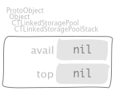
Have a look at the following manipulations, starting with an empty stack pool,
"CTLinkedStoragePoolTest, protocol tests"
testSomePushesThenPopsOnStack
| stack steps |
steps := OrderedCollection new
add: (Message selector: #push: arguments: { 3 });
add: (Message selector: #push: arguments: { 4 });
add: (Message selector: #push: arguments: { 5 });
add: (Message selector: #pop);
add: (Message selector: #pop);
add: (Message selector: #pop);
add: (Message selector: #push: arguments: { 6 });
yourself.
stack := CTLinkedStoragePoolStack new.
steps withIndexDo: [ :each :i |
each sendTo: stack.
self exportSlotsGraphOf: stack pathSuffix: i asString ]
by pushing 3,

then push 4,

then push 5,
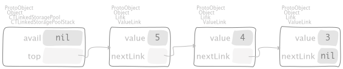then pop,

then pop,

then pop,
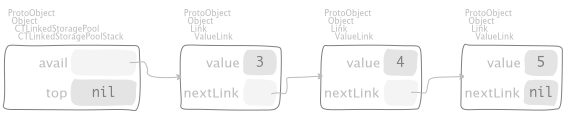then push 6,
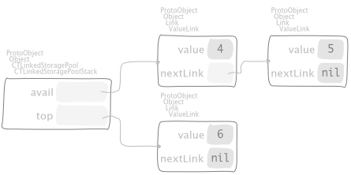respectively. We cannot pop from an empty stack,
"CTLinkedStoragePoolTest, protocol tests"
testPopFromEmptyStack
self
should: [
CTLinkedStoragePoolStack new
push: 3;
pop;
pop ]
raise: CollectionIsEmpty
as required. Finally, lets see how to swipe the entire pool in one shot,
"CTLinkedStoragePoolTest, protocol tests"
testRemoveAllFromStack
| stack |
stack := (1 to: 5)
inject: CTLinkedStoragePoolStack new
into: [ :pool :each | pool push: each ].
stack
pop;
pop.
self exportSlotsGraphOf: stack pathSuffix: 'full'.
stack removeAll.
self exportSlotsGraphOf: stack pathSuffix: 'empty'.
self assert: stack isEmpty
first push 5 elements and then pop 2 of them in order to have some room available,
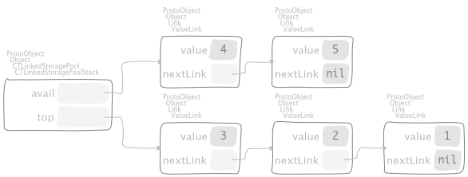then swipe out by means of the message
"CTLinkedStoragePoolStack, protocol removing"
removeAll
| link |
top ifNotNil: [
link := top.
[ link nextLink ] whileNotNil: [ link := link nextLink ].
link nextLink: avail.
avail := top.
top := nil ]
to have

as required.
9.2. Queue pool¶
"CTLinkedStoragePoolTest, protocol tests"
testEmptyQueue
| queue |
queue := CTLinkedStoragePoolQueue new.
^ self
assert: queue isEmpty;
exportSlotsGraphOf: queue

Have a look at the following manipulations, starting with an empty queue pool,
"CTLinkedStoragePoolTest, protocol tests"
testSomePushesThenPopsOnQueue
| queue steps |
steps := OrderedCollection new
add: (Message selector: #push: arguments: { 3 });
add: (Message selector: #push: arguments: { 4 });
add: (Message selector: #push: arguments: { 5 });
add: (Message selector: #pop);
add: (Message selector: #pop);
add: (Message selector: #pop);
add: (Message selector: #push: arguments: { 6 });
yourself.
queue := CTLinkedStoragePoolQueue new.
steps withIndexDo: [ :each :i |
each sendTo: queue.
self exportSlotsGraphOf: queue pathSuffix: i asString ]
by pushing 3,
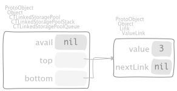then push 4,

then push 5,
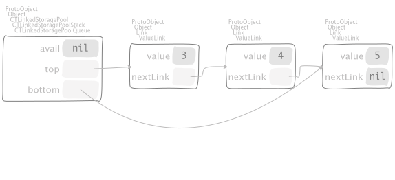then pop,

then pop,
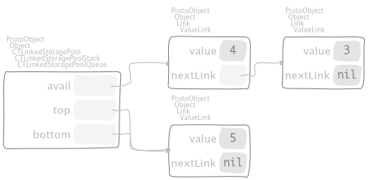then pop,

then push 6,

respectively. We cannot pop from an empty queue,
"CTLinkedStoragePoolTest, protocol tests"
testPopFromEmptyQueue
self
should: [
CTLinkedStoragePoolQueue new
push: 3;
pop;
pop ]
raise: CollectionIsEmpty
as required. Finally, lets see how to swipe the entire pool in one shot,
"CTLinkedStoragePoolTest, protocol tests"
testRemoveAllFromQueue
| queue |
queue := (1 to: 5)
inject: CTLinkedStoragePoolQueue new
into: [ :pool :each | pool push: each ].
queue
pop;
pop.
self exportSlotsGraphOf: queue pathSuffix: 'full'.
queue removeAll.
self exportSlotsGraphOf: queue pathSuffix: 'empty'.
self assert: queue isEmpty
first push 5 elements and then pop 2 of them in order to have some room available,

then swipe out by means of the message
"CTLinkedStoragePoolQueue, protocol removing"
removeAll
top ifNotNil: [
bottom nextLink: avail.
avail := top.
top := bottom := nil ]
to have

as required.
9.3. CircularList pool¶
"CTLinkedStoragePoolTest, protocol tests"
testEmptyCircularList
| stack |
stack := CTLinkedStoragePoolCircular new.
^ self
assert: stack isEmpty;
exportSlotsGraphOf: stack
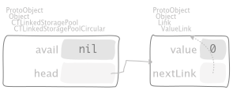
Have a look at the following manipulations, starting with an empty queue pool,
"CTLinkedStoragePoolTest, protocol tests"
testSomePushesThenPopsOnCircular
| circular steps |
steps := OrderedCollection new
add: (Message selector: #push: arguments: { 3 });
add: (Message selector: #push: arguments: { 4 });
add: (Message selector: #push: arguments: { 5 });
add: (Message selector: #pop);
add: (Message selector: #pop);
add: (Message selector: #pop);
add: (Message selector: #push: arguments: { 6 });
yourself.
circular := CTLinkedStoragePoolCircular new.
steps withIndexDo: [ :each :i |
each sendTo: circular.
self exportSlotsGraphOf: circular pathSuffix: i asString ]
by pushing 3,
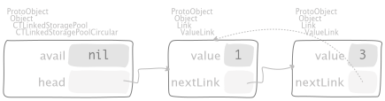then push 4,
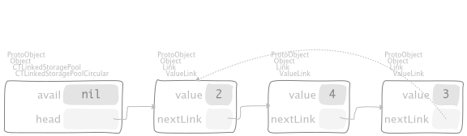then push 5,
then pop,
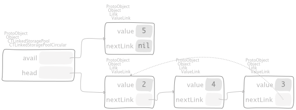then pop,
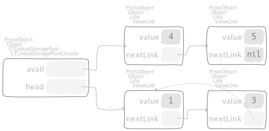then pop,
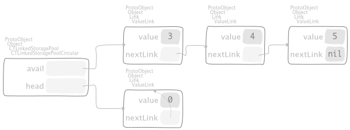then push 6,
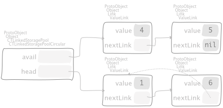respectively. We cannot pop from an empty queue,
"CTLinkedStoragePoolTest, protocol tests"
testPopFromEmptyCircular
self
should: [
CTLinkedStoragePoolCircular new
push: 3;
pop;
pop ]
raise: CollectionIsEmpty
9.3.1. Addition of polynomials¶
Consider the addition of two polynomials,
"CTLinkedStoragePoolTest, protocol tests"
testPolynomialAdditionFromKnuthTextbook
self withKnuthPolynomialsDo: [ :p :q |
| r |
self
exportSlotsGraphOf: p pathSuffix: 'p';
exportSlotsGraphOf: q pathSuffix: 'q'.
"SUT"
r := p + q.
self exportSlotsGraphOf: r pathSuffix: 'r'.
"the order is important and the result can be read as side-effect on `p`"
self assert: r equals: q.
"Actually check for the result."
r := Array streamContents: [ :array |
[ r isEmpty ] whileFalse: [ array nextPut: r pop ] ].
self assert: r equals: {
(#( 2 0 0 ) -> 1).
(#( 1 0 0 ) -> 1).
(#( 0 1 0 ) -> 1 negated) } ]
let \(p\) be
and let \(q\) be
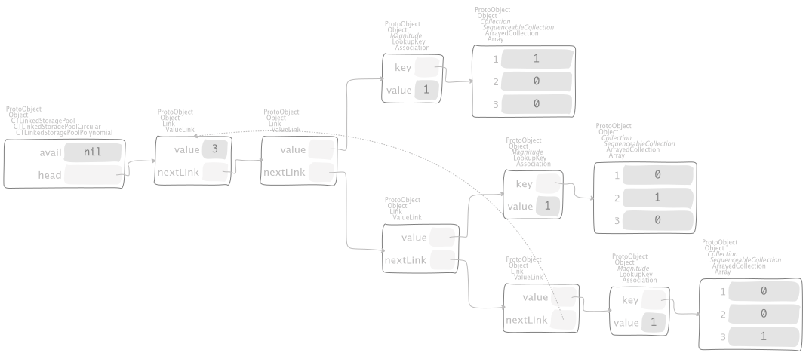
yield polynomial \(r\)